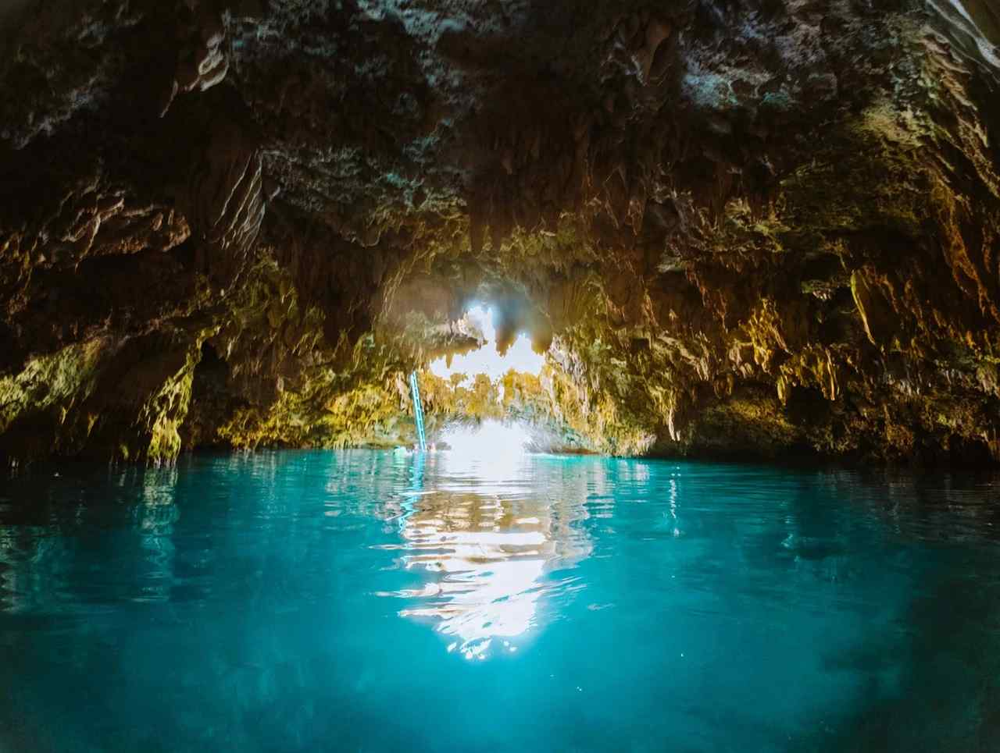

Anda sits at the far eastern end of Bohol, around 100 km from Tagbilaran, and that distance is the reason it stays calm. Most Bohol trips end at Panglao's resorts, the Chocolate Hills and the tarsiers. Anda gets the travellers who keep going: a long public beach, cave pools cut into limestone, and a town where the municipal hall, police station and tourism office all look out at the same stretch of sand.
Two places justify the ride. Quinale Beach is the easy, free-to-walk-onto shoreline, and Cabagnow Cave Pool is a limestone sinkhole you can jump into. Both are cheap. The planning is what trips people up: Cabagnow has closed days, the environmental fee comes with a receipt you need to keep, and the bus timetable decides how much of your first day is left. If you have already read our Panglao and Alona Beach guide, treat Anda as the slower half of the same island.
Below: the route from Cebu, how Quinale and Cabagnow work, the other pools and caves worth a stop, and a two-night plan built around the closed days.

How to Get to Anda From Cebu
Every route goes through Tagbilaran. Fast craft from Cebu Pier 1 take about two hours, with the first sailing at around 5:10 AM and boats running through the day. An OceanJet Tourist seat was about ₱790 in mid-2026, and slower Lite Shipping crossings of about four hours start from roughly ₱580. The terminal fee is paid in cash at the pier, so keep small bills. Take the earliest boat, because the bus leg is the long one.
From the Tagbilaran port, a tricycle takes you to the Dao Integrated Bus Terminal. Buses to Anda take roughly 2.5 to 3 hours, and fares run from about ₱120 to ₱215 depending on the operator and whether the bus is air-conditioned. The first trip leaves around 4:45 AM and the last at about 7:15 PM, but do not plan around the last one. A private van costs somewhere between ₱2,500 and ₱6,500 one way depending on group size and haggling, which is reasonable only when split between three or four people. An early boat plus an early bus puts you in Anda around midday.
Do not count on ride-hailing in Bohol. Tricycles and habal-habal cover short hops in town, scooters rent for about ₱400 to ₱600 a day, and Anda's ATMs can be empty or offline, so withdraw cash in Tagbilaran.
Quinale Beach and the Quieter Sand Nearby
Quinale is a public beach with fine white sand, shallow water and coconut palms for shade. On a clear day you can see Camiguin on the horizon, which is worth knowing if you are weighing a Camiguin weekend from Cebu or Bohol as a follow-on. There are no beach bars or jet skis, and the resorts along the shore run from budget rooms to high-end spas.
The fee to know about is Anda's environmental charge of ₱30 per person, collected at a checkpoint near the Guindulman boundary. You pay it once, and the receipt matters: beach caretakers and the Cabagnow booth may ask to see it, and it can save you paying again. Carry ₱20 and ₱50 bills for small caretaker fees.
Talisay Beach is a short walk from Cabagnow and is quieter, with fishing boats on the sand rather than loungers. After heavy rain, debris washes up and the water clouds. The dry months, December to May, give the calmest seas and clearest water, with December to March the busiest, while June to October is the rainy season.
Cabagnow Cave Pool: Fees, Hours and Closed Days
Cabagnow is in Barangay Bacong, a few minutes' ride from the town centre and about 2 km from Quinale. It is a sinkhole in the limestone with brackish water, reached by a short walk from the road. The jump from the ledges is about 4 to 5 metres, and a metal ladder takes you in and out. Depth changes with the season, somewhere between 12 and 25 feet, so ask the caretaker which ledge is safe that day and do not dive headfirst.
Entry is about ₱50 per person at the booth, plus the ₱30 environmental fee if you have not already paid it. The pool opens at around 8:00 AM and closes by about 3:30 PM. Swimming is not allowed on Mondays and Fridays, when the pool is closed for upkeep, and it can also shut after heavy rain turns the water murky. Ask your resort the day before in case the schedule has shifted, and plan Cabagnow for a Tuesday to Thursday or a weekend.
Lifeguards and life jackets are available for people who are not strong swimmers. Wear water shoes, because the steps and the ladder are slippery. Go at opening, before the mid-morning tour vans.
Other Cave Pools, Lamanoc Island and Candijay
Anda has more than 20 cave pools, so a closed Cabagnow does not end your day. Combento, Tibaw and Kaligoon are the other names you will hear. For a longer outing, the Bacong trekking loop covers about 4.5 km in roughly 2.5 to 3.5 hours and links Banilad Spring Cave Pool, Tibaw Cave Pool and Swamp Cave Oasis. It needs a local guide, around ₱500 per group of up to five. Bring a headlamp.
Lamanoc Island, in Barangay Badiang, is the one stop that is not about swimming. A boardwalk of about 310 metres crosses the mangroves, and you reach the island on foot at low tide or by a short banka ride at high tide. The caves hold boat coffins and broken clay jars, and the rock shelters carry prehistoric rock art. It opens daily from 8:00 AM to 4:00 PM, so check the tide first.
Candijay is a separate half-day: Can-umantad Falls and the Cadapdapan rice terraces, each with a small fee. Check the water flow before committing to the ride.
A Two-Night Plan Built Around the Closed Days
- Day 1: Arrive by early afternoon, pay the environmental fee, settle in and walk Quinale for sunset.
- Day 2 (Tuesday to Thursday): Cabagnow at 8:00 AM, Talisay Beach next door, lunch at the public market eateries, then Lamanoc Island at a tide that suits you.
- Day 3: Swim at Quinale in the morning and take a mid-morning bus. Leave Anda before 2:00 PM if you must catch a ferry the same evening.
If you arrive on a Sunday, flip it: Monday for Quinale and Lamanoc, Tuesday for Cabagnow.
Is Anda Worth the Extra Bus Ride?
It depends on what you want. Door to door from Cebu, expect most of a day each way, which rules out a casual overnight. If you only have one day for Bohol, our Bohol day trip from Cebu is the better fit. If you want a quiet beach, a cave pool you can jump into and a town with no nightlife to speak of, Anda is worth the extra hours.
Book two nights, put Cabagnow on a Tuesday, Wednesday or Thursday morning, and keep your ₱30 receipt in a dry pocket.

Comments
No comments yet. Been here recently? Share a tip or ask a question.
Leave a Reply